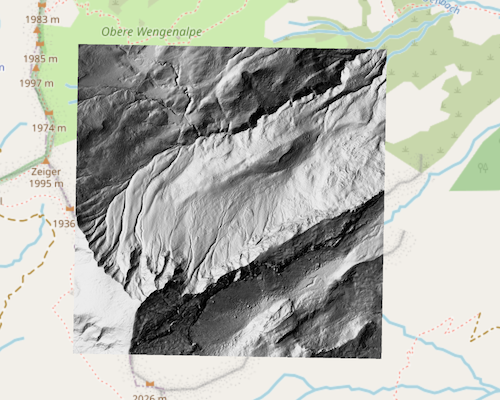
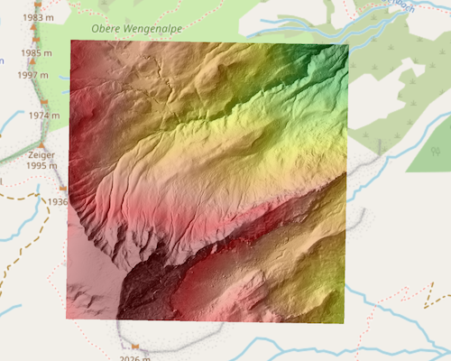

Das Farbrelief, auch Höhenkolorierung oder hypsometrische Darstellung genannt, ist die intuitivste Methode, um absolute Höhenlagen in einer Landschaft zu visualisieren. Es übersetzt Höheninformationen direkt in Farben: Dunkle Töne stehen meist für niedrige Lagen (z.B. Täler), helle Töne für hohe Lagen (z.B. Berge). Dadurch wird auf einen Blick erkennbar, wo die höchsten und tiefsten Punkte eines Gebiets liegen und wie groß die Höhenunterschiede sind. Im Gegensatz zur Schummerung, die primär die Geländeform betont, liegt der Fokus des Farbreliefs auf der direkten Abbildung der absoluten Höhenwerte. In Verbindung mit dem hochauflösenden Digitalen Geländemodell DGM1, bietet das Farbrelief detaillierte Einblicke in die Höhenstruktur einer Landschaft. Zu den wichtigsten Anwendungsbereichen gehören:
Das Farbrelief wird durch eine direkte Zuordnung von Höhenwerten zu Farbwerten erzeugt. Für jeden Bildpunkt (Pixel) im DGM1, der einen spezifischen Höhenwert enthält, wird anhand einer vordefinierten Farbsteuerdatei eine entsprechende Farbe ermittelt und zugewiesen. Es handelt sich hierbei um eine reine visuelle Darstellung der absoluten Höhen. Das Prinzip ist denkbar einfach: Einem bestimmten Höhenbereich wird eine bestimmte Farbe oder ein Farbverlauf zugeordnet. Ein typisches Farbschema reicht von dunklem Grün für niedrigere Höhen über Gelb-/Brauntöne bis hin zu Grau- und Weißtönen für die höchsten Lagen.
| Höhenbereich (m) | Beschreibung | Charakteristika und Beispiele | Lage in Deutschland |
|---|---|---|---|
| < 50 | Tiefebene / Meeresspiegelnähe |
Sehr flache Gebiete, oft Flussauen, Küstenbereiche oder große Seen.
Beispiele: Flussmarschen, Strände, Wattenmeer, große Stauseen. |
Nordseeküste (z.B. Ostfriesland), Elbtal (z.B. Niedersachsen, Brandenburg), Rheinebene (z.B. NRW, Rheinland-Pfalz), Bodensee-Uferbereiche (Baden-Württemberg). |
| 50 - 200 | Flachwelliges Hügelland / Becken |
Sanfte Hügel, weite Ebenen mit geringen Erhebungen, weitreichende Agrarlandschaften.
Beispiele: Ackerflächen mit sanften Wellen, weite Grünlandbereiche, weiche Moränenlandschaften. |
Münsterländer Bucht (NRW), Leipziger Tieflandsbucht (Sachsen), Teile des Kraichgaus (Baden-Württemberg), Niederrheinische Bucht (Nordrhein-Westfalen). |
| 200 - 500 | Hügelland / Mittelgebirgsvorland |
Ausgeprägteres Hügelland, beginnende Mittelgebirgsregionen, oft mit Wäldern und Tälern durchzogen.
Beispiele: Weinberge, ausgedehnte Forste auf hügeligem Terrain, voralpine Landschaften. |
Harzvorland (Niedersachsen, Sachsen-Anhalt), Odenwald (Hessen, Baden-Württemberg), Bayerischer Wald (Teile), Eifel (Teile von Rheinland-Pfalz). |
| 500 - 1000 | Mittelgebirgslagen |
Typische Mittelgebirgslandschaften mit deutlichen Steigungen, tiefen Tälern und ausgedehnten Wäldern.
Beispiele: Mittelgebirgskämme, tief eingeschnittene Flusstäler, Hochflächen mit moorigen Abschnitten. |
Schwarzwald (Baden-Württemberg), Harz (Sachsen-Anhalt, Niedersachsen), Erzgebirge (Sachsen), Rhön (Bayern, Hessen). |
| > 1000 | Hochgebirge / Alpine Regionen |
Steile Berghänge, markante Gipfel, Hochalmen, Kare, felsiges Gelände, oft mit Schneefeldern.
Beispiele: Gletscherregionen, schroffe Felswände, alpine Hochtäler. |
Bayerische Alpen (z.B. Wettersteingebirge, Berchtesgadener Alpen). |
Der Benutzer muss eine geeignete Farbsteuerdatei für Höhenbereiche und Farben definieren. Welche Farben und Höhenbereiche sinnvoll sind, ist vom jeweiligen Anwendungsfall und von den charakteristischen Höhenlagen des Untersuchungsgebiets abhängig. Es empfiehlt sich, zunächst die Verteilung der Höhenwerte (z. B. über ein Histogramm) zu analysieren, um eine passende Klassifizierung zu finden. Soll ein Wertebereich nicht dargestellt werden, wählt man eine volltransparente Farbe.
Die untenstehende Tabelle zeigt ein beispielhaftes Farbschema für ein Farbrelief, bei dem Höhenstufen unterschiedlichen Farben zugeordnet werden. Die RGBA-Werte stehen für Rot, Grün, Blau und Alpha (Transparenz). Das nachfolgende Farbschema ist als Beispiel zu verstehen. Es wurde speziell für ein hochalpines Areal definiert.
| Höhe (m) | RGBA | Farbe | Farbname |
|---|---|---|---|
| 1480 | 0 100 0 255 |
|
Dunkelgrün |
| 1540 | 0 128 0 255 |
|
Grün |
| 1600 | 50 205 50 255 |
|
Hellgrün |
| 1660 | 173 255 47 255 |
|
Gelbgrün |
| 1720 | 255 255 0 255 |
|
Gelb |
| 1780 | 255 165 0 255 |
|
Orange |
| 1840 | 255 127 80 255 |
|
Lachsrot |
| 1900 | 255 0 0 255 |
|
Rot |
| 1960 | 178 34 34 255 |
|
Feuerwehrrot |
| 2020 | 128 0 0 255 |
|
Dunkelrot |
| nv | 0 0 0 0 |
|
Transparent |
Farbrelief für eine Datenkachel in den Hochalpen (Großer Seekopf, 2085 Meter).
Das Farbrelief visualisiert die absoluten Höhenwerte des Geländes direkt durch Farben. Es gibt Aufschluss über die tatsächliche Höhe eines Punktes. Die Schummerung hingegen dient dazu, die Form, Neigung und Ausrichtung des Geländes durch Schattierung darzustellen, als ob es von einer Lichtquelle beleuchtet würde. Sie betont also die 'Rauheit' oder die 'Glätte' sowie die topographischen Formen. Beide Darstellungsformen ergänzen sich hervorragend: Ein über eine Schummerung gelegtes transparentes Farbrelief kann eine sehr informative und ästhetisch ansprechende Karte des Geländes erzeugen, die sowohl Höhen als auch Formen klar abbildet.
Schummerung für eine Datenkachel in den Hochalpen (Großer Seekopf, 2085 Meter).
Schummerung und Farbrelief (teiltransparent) für eine Datenkachel in den Hochalpen (Großer Seekopf, 2085 Meter).
Über den Dienst Kolorierung können Farbsteuerdateien definiert, eingelesen, editiert und gespeichert werden.
© 2025 - Höhendaten für Deutschland